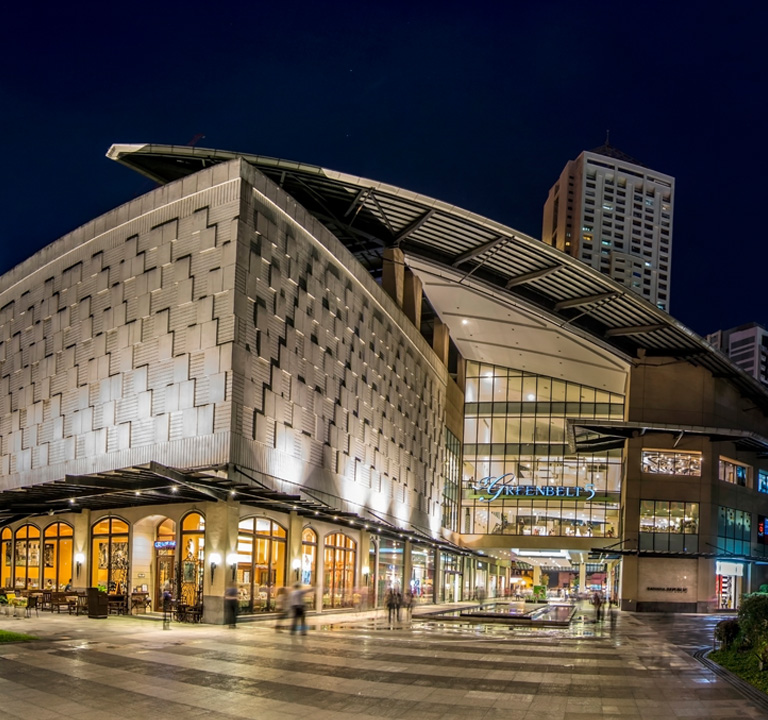

Buttbook is an intergrated website that helps
you navigate the best restrooms near you!
This toilet is in SM City Clark, Angeles City, Pampanga.
Why someone had this picture, I don't know. But it shows that some people are not comfortable in sitting in this toilet, as it has no seat.
Here is a list of mall toilets equipped with bidets
Greenbelt 5 (Ayala Center, Makati)
Multiple Reddit users confirm bidets are available in the restrooms at Greenbelt 5, and note it's even "much better compared to SM" malls in terms of
cleanliness and comfort.

2. Greenbelt 3 (Ayala Center, Makati)
According to .ph's World Toilet Day feature, the newer wing of Greenbelt 3 features modern restrooms with a bidet in every stall,
complete with orchids and waiting areas.
3. Power Plant Mall at Rockwell Center (Makati)
A Facebook-sourced list mentions Power Plant Mall as among those with free bidet-equipped restrooms.
Facebook
4. SM North EDSA (Quezon City)
Included in a crowd‑sourced list of malls with free bidet facilities—specifically noted near the department store.
5. SM Grand Central (near Divisoria / Manila)
Also listed in the same “free bidet” overview.
6. SM Department Store (SM Makati)
A Tripadvisor review praises SM Makati’s toilets as “very clean and have a bidet,” with staff cleaning every 5–10 minutes.
7. Robinsons Magnolia (Manila)
Features a paid lounge (P20 fee) that includes Toto toilet seats with auto bidet functions—accessible also at Robinsons Galleria and Antipolo.
8. S Maison Mall (Mall of Asia complex)
Included in online listings of malls offering free bidet installations.